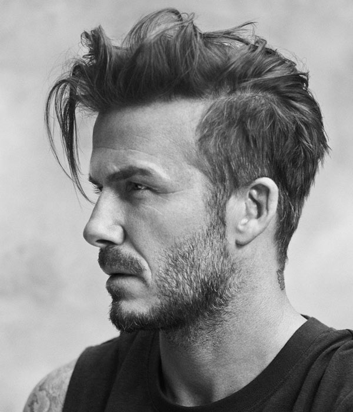

David Beckham

Age:46
Nationality:English
David Robert Joseph Beckham, (born 2 May 1975) is an English former professional footballer.
He played for Manchester United, Preston North End, Real Madrid, Milan, LA Galaxy, Paris Saint-Germain, and the England
national team for which he held the appearance record for an outfield player until 2016 when Wayne Rooney surpassed his total.
He is the first English player to win league titles in four countries: England, Spain, the United States and France. He
announced his retirement in May 2013 after a 20-year career, during which he won 19 major trophies .
Known for his range of passing, crossing ability and bending free-kicks as a right winger, Beckham was twice runner-up
for FIFA World Player of the Year and in 2004 he was named in the FIFA 100 list of the world's greatest living players.
He was inducted into the English Football Hall of Fame in 2008. A global ambassador for the sport, Beckham is regarded
as a British cultural icon.